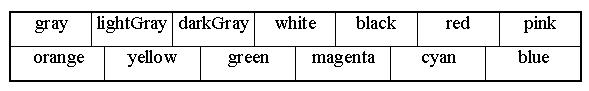

Before considering the StikNote class, the NoteWindow class which implements the client program will be presented. Its major purpose is to configure, construct and show the mainWindow and then to respond to presses of its "Stik Note" button by creating and showing new instances of the NoteWindow class containing the messages from the mainWindow. Its implementation, as far as the end of its constructor, is as follows.
0001 // Filename StikNote.java.
0002 // Contains the StikNote applet, responsible for creating
0003 // and showing the main window and then creating and
0004 // showing NoteWindow windows when its button is pressed.
0005 //
0006 // Written for the JI book, Chapter 3.
0007 // Fintan Culwin, v 0.2, August 1997.
0008
0009
0010 package StikNote;
0011
0012 import java.awt.*;
0013 import java.awt.event.*;
0014 import java.applet.*;
0015
0016 import StikNote.NoteWindow;
0017 import StikNote.StikNoteWindow;
0018
0019
0020 public class StikNote extends Applet
0021 implements ActionListener {
0022
0023 private StikNoteWindow mainWindow;
0024
0025 public void init() {
0026 this.setFont( new Font( "Serif", Font.PLAIN, 20));
0027 this.setBackground( Color.yellow);
0028 this.setForeground( Color.blue);
0029 mainWindow = new StikNoteWindow( this);
0030 } // End init.
On line 0010 this class also declares itself to be contained within the StikNote package and, on lines 0016 and 0017, imports the two other classes contained in the package. Its class declaration, commencing on line 0020, states that it implements the ActionListener interface in order for it to be able to respond to ActionEvents generated from the mainWindow, which is declared as an instance attribute of the class on line 0023.
The init() method commences, on lines 0026 to 0028, by configuring the Applet's physical appearance. On line 0026 the Font to be used by the Applet is set to 20 point, plain, Serif. On line 0027 its background Color is set to yellow and on line 0028 its foreground to blue. The configuration of these aspects of an interface's physical appearance is accomplished by using the setForeground(), setBackground() and setFont() methods, which are inherited from the Component class and so are available to all components.
The argument to the setForeground() and setBackground() methods is an instance of the Color class and the most convenient way of obtaining an suitable value is to use one of the manifest class wide constants supplied by the class. These constant Color values are listed in Table 3.1.

Table 3.1 Class wide manifest constants supplied by the Color class
The argument to the setFont() method is an instance of the Font class which can be constructed by specifying the font to be used, its style and its size. Thus in the example above a 20 point plain Serif font has been specified as the font to be used in the StickNote main window. Serif is a virtual font name which is mapped onto a physical font in the Java run-time environment's configuration, thus a user can change the mapping in order to accommodate their own preferences and requirements. Other virtual fonts which can be specified include Sans-serif, Monospaced, Dialog, and DialogInput. Alternatively physical fonts, including Times, Helvetica, Courier, Symbol and ZapfDingabats, can be specified. However as using physical font specifications will prevent the user from reconfiguring the font to be used to their own requirements, only virtual fonts specifications should be used.
Design Advice
Specify fonts in source code using virtual not physical names in order to allow the user to reconfigure them to their own requirements.
The font style can be specified using one of the class wide Font manifest constants PLAIN, BOLD or ITALIC. A bold italic font can be specified by a bitwise anding of the two constants (Font.BOLD | Font.ITALIC).
These font, foreground and background physical appearance resources are inherited via the instance hierarchy. Consequently all components which are added to this Applet window will use a 20 point plain serif font with yellow backgrounds and blue foregrounds. Not all components take advantage of this inheritance for example, as can be seen on Figure 3.1, Button instances do not use the inherited background color although they do use the inherited foreground and fontresources. The inheritance does not extend to any Frames which are added to the Applet window, techniques for accommodating to this consideration will be explained below.
Having established the physical appearance of the application, on line 0029, the mainWindow is created by calling its StikNoteWindow constructor passing as its argument the identity of the Applet which is currently being constructed. This, as explained above, will create and install the main window interface into the Applet window and will cause it to be registered as the stikNoteButton's listener. When the init() method concludes the main window interface will be automatically presented to the user on the desktop display.
In order to satisfy the requirement of the ActionListener interface the StikNote class must supply an actionPerformed() method, as follows.
0033 public void actionPerformed( ActionEvent event) {
0034
0035 NoteWindow theNote;
0036 String itsContents = mainWindow.getMessage();
0037
0038 if ( itsContents.length() > 0) {
0039 theNote = new NoteWindow( itsContents, this);
0040 mainWindow.clearMessage();
0041 } // End if.
0042 } // End actionPerformed.
The method commences, on line 0036, by retrieving the String from the mainWindow's message area using its protected getMessage() method. If the message is empty as indicated by the condition, on line 0038 using the String length() method, then the actionPerformed() method concludes with no further steps. Otherwise, on line 0039, a new instance of the NoteWindow class is created passing as arguments the message which it is to display and the identity of the Applet. Before the method concludes the message area in the mainWindow is cleared, on line 0040, by calling the mainWindow's clearMessage() method.
The effect of this method, when the stikNote button on the main window is pressed, is to retrieve the contents of the TextArea, if any, pass them to a new instance of the NoteWindow class and then to clear the message from the main window. The user will see the message transferred from the main window to a new window which pops up onto the desktop.